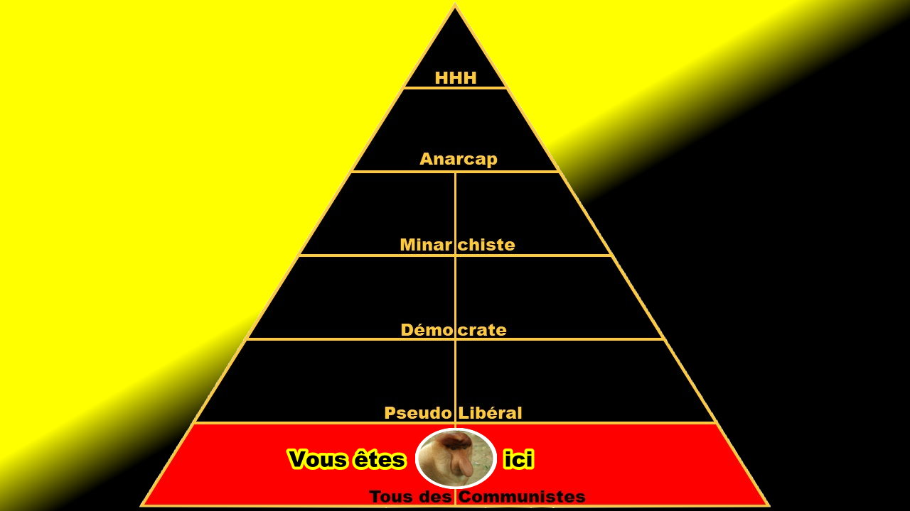

Quiz libéral · QuizLiberal.xyz
Diagnostic libéral.
Pour vous aider à vous positionner, ou à jauger le degré de libéralisme de votre entourage, des journalistes, des politiciens ou de votre chanteuse préférée, voici un exercice simple de moins de 10 minutes.
- 64 questions
- Moins de 10 minutes
- Anonyme : rien n'est envoyé
Question 1 sur 64
D'après vos réponses…
